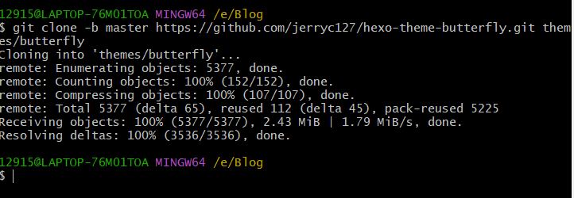
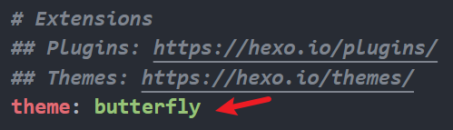
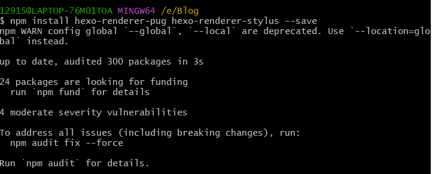

hexo+github搭建个人博客（三）主题配置
前言
有一个自己的博客还不够优雅，搭配上一个酷炫的主题才能更优雅地书写，本文以 butterfly主题为基础，谈谈博客界面的美化与功能细节的添加
应用butterfly主题
安装主题
在hexo根目录里打开gitbash，输入如下命令：
git clone -b master https://github.com/jerryc127/hexo-theme-butterfly.git themes/butterfly
成功后如图所示：
应用主题
然后进入根目录里的_config.yml文件，将主题改为butterfly:
安装插件
如果你没有 pug 以及 stylus 的渲染器，请下载安装：
建议
在根目录创建一个名为 _config.butterfly.yml 的文件，将butterfly主题目录里的文件_config.yml内容复制到新建的文件中，以后更改配置时在新建的这个文件里更改，因为解析时新建的这个文件优先级高，这样既可以有效修改配置，又避免升级主题时数据丢失。
注意：原来的文件不要删除
网页功能配置
front-matter
首先介绍一下 front-matter，顾名思义，是在md文档中最前面，以—为分界线，用于指定参数或变量的部分
Page Front-matter
相关参数如下表：
| 写法 | 解释 |
|---|---|
| title | [必需]页面标题 |
| date | [必需]页面创建日期 |
| type | [必需]标签、分类和友链三个页面需要 |
| updated | 页面更新日期 |
| comments | 显示评论模块 |
| top_img | 页面顶部图片 |
| mathjax | per_page:false时才需要配置 |
Post Front-matter
| 写法 | 解释 |
|---|---|
| title | [必需]文章标题 |
| date | [必需]创建日期 |
| updated | 更新日期 |
| tags | 标签 |
| categories | 文章分类 |
| cover | 文章缩略图 |
| mathjax | per_page:false时才需要配置 |
标签页
首先进入主题配置文件_config.butterfly.yml，更改如下：
1 | #菜单栏 |
根据自己情况，还可以再加，我只创建了这几个页面。
然后前往你的 Hexo 博客的根目录，输入 hexo new page tags，你会找到source/tags/index.md这个文件，修改这个文件：
1 |
|
分类页操作步骤同上，把命令改为 hexo new page categories 即可
未完待续…
本博客所有文章除特别声明外，均采用 CC BY-NC-SA 4.0 许可协议。转载请注明来自 LN-Blog！
 微信
微信 支付宝(不可用)
支付宝(不可用)


评论